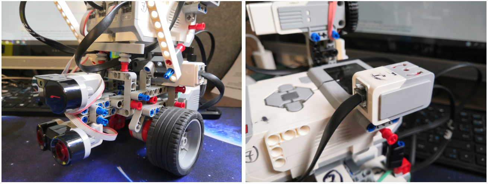
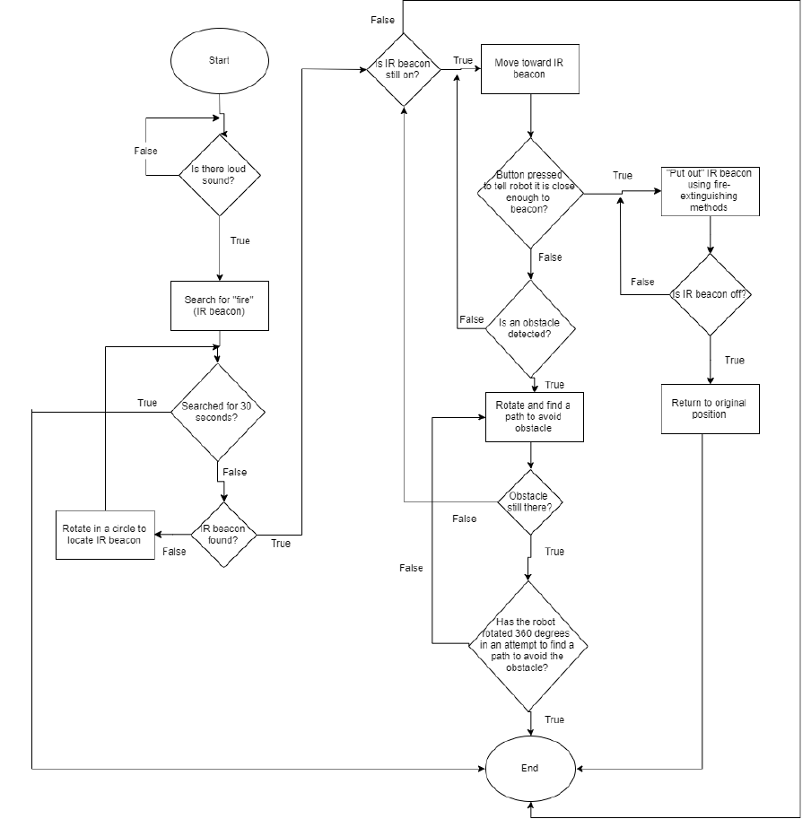

FIME Fire Fighting Robot
FIME (Fire Is My Enemy) is a firefighting robot that puts out fires where sprinklers are not practical. Using 4 motors and 4 sensors (sound, infrared, ultrasonic, gyro), it performs automated tasks like finding the fire (beacon), avoiding obstacles, and putting out the fire through two methods: slapping it with a wet paper towel and spraying it with water.

Sensors
There are in total four sensors used in this robot: Infrared sensor, sound sensor, gyro sensor and an ultrasonic sensor.
The sound sensor is used to initiate the entire fire-fighting progarm. Once the sound sensor picks up a loud noise, such as that of a fire alarm or someone screaming for help, the robot will start executing its fire-fighting progarm.
The gyro, ultrasonic and the IR sensor all helps the robot find its way toward the source of the fire. The IR sensor detects a heat source (In this project, we used an IR beacon.) and guides the robot toward its direction while the ultrasonic sensor helps the robot navigate through obstacles.

Mechanical Design
Its mechanical design focuses mostly on conserving space. The chassis design, motor drive design and sensor attachment design all aims to keep the components of the robot as close to its main body as possible.
For instance, the motor powering the arms are situated in the center of the robot body underneath the EV3 brick. This motor rotates a gear which in turn rotate the arms to create the whacking motion. The location mechanical design of this motor is very compact as the design was focused on saving space.

Software Design
The main program of the robot is a combination of two broad sections of code: the movement and the fire-extinguishing methods. The movement of the robot incorporates path-finding around obstacles towards the IR beacon and the code for the fire-extinguishing methods controls the two motors for the physical battering arm and water sprayer arm.
The following flowchart was created and used to organize the program.

Gallery